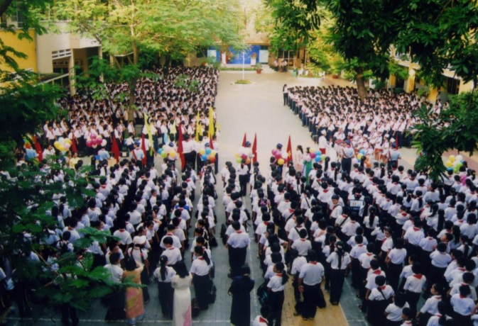

Trường THCS Bàn Cờ tọa lạc tại số 16 đường số 3 Cư xá Đô Thành – Phường 4 Quận 3. Trường được thành lập từ năm 1946 – đến nay đã tròn 69 tuổi. Thuở ban đầu Trường được xây dựng với mái tranh, vách ván, một cách đơn sơ, tạm bợ trên một bãi đất hoang và mang tên Trường Bàn Cờ II. Đến 1950, để đáp ứng nhu cầu học sinh trong vùng ngày càng tăng, Trường Bàn Cờ II tiến hành xây mới với tường gạch lợp ngói, số phòng học tăng lên.
Trước năm 1986 Trường Bàn Cờ bao gồm cả cấp 1 và cấp 2. Từ năm 1986 đến nay Trường Bàn Cờ được giao nhiệm vụ giảng dạy học sinh cấp 2 và mang tên là Trường THCS Bàn Cờ.